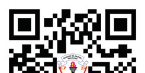

Preface
This textbook, Physics for Secondary Schools, is written specifically for Form Two students in the United Republic of Tanzania. It is prepared in accordance with the Revised 2023 Physics Syllabus for Ordinary Secondary Education, Form I-IV, issued by the Ministry of Education, Science, and Technology (MoEST). It is a revised edition of Physics for Secondary Schools Student’s Book for Form Two that was published in 2021 in accordance with the 2007 syllabus issued by the then Ministry of Education and Vocational Training (MoEVT).
The book consists of six chapters: Static electricity, Current electricity, Magnetism, Nature and reflection of light, Refraction and dispersion of light, and Optical instruments. Each chapter contains illustrations, activities, and exercises. You are encouraged to do all the activities and exercises together with other assignments that the teacher will provide. You are also required to prepare a portfolio for keeping records of activities performed in different lessons. Doing so will enhance your understanding and promote the development of the intended competencies for this level.
Additional learning resources are available at the TIE e-Library at https://ol.tie.go.tz or ol.tie.go.tz

Tanzania Institute of Education